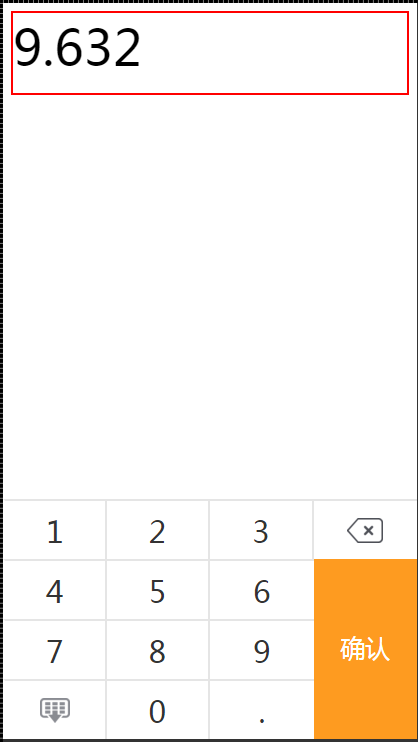

keyBoardNum
移动端数字键盘插件，该插件依赖于zepto或者jquery
效果图

使用方法
在页面中引入zepto或者jquery
<script type="text/javascript" src="zepto.min.js"></script>然后引入keyboardNum(页面中的css已经全部打包在js中了，无需引用css)
<script type="text/javascript" src="keyboardNum.js"></script>两个文件引入之后就可以初始化键盘了
var key = new KeyBoardNum('#input',{
decimal:5,
integer:3,
btnCallBack:function(num){
console.log(num);
}
});
key.show();
//也支持链式调用
var key = new KeyBoardNum('#input',{
decimal:5,
integer:3,
btnCallBack:function(num){
console.log(num);
}
}).show();参数说明
KeyBoradNum接受两个参数：
1、第一个参数：显示输入的数字的元素(支持一切合法的元素选择类型)，这个元素不能是input或者textarea
2、第二个参数option，一个对象，其属性如下
| 属性名称 | 属性说明 | 默认值 |
|---|---|---|
| itemHeight | 一个数字键的高度 | 60 |
| decimal | 允许的小数点长度 | 2 |
| integer | 允许的整数部分长度 | 4 |
| fontSize | 数字字体大小 | '30px' |
| color | 数字的颜色 | '#333' |
| bgColor | 背景颜色 | '#fff' |
| borderColor | 边框颜色 | '#E5E5E5' |
| activeColor | 键盘被点击时的背景颜色 | '#ebebeb' |
| btnText | 按钮显示的文字 | '确认' |
| btnColor | 按钮文字的颜色 | '#fff' |
| btnFontSize | 按钮文字大小 | '70px' |
| btnBgColor | 按钮的背景颜色 | '#bcbcbc' |
| btnActiveBgColor | 按钮激活的背景颜色 | '#fe9b20' |
| btnTouchBgColor | 按钮激活后被点击时的背景颜色 | '#e27d00' |
| btnCallBack | 按钮点击后的回调 | null |
| delImg | 删除按钮图片 | 默认值以base64形式存储在js中 |
| hideImg | 隐藏按钮图片 | 默认值以base64形式存储在js中 |